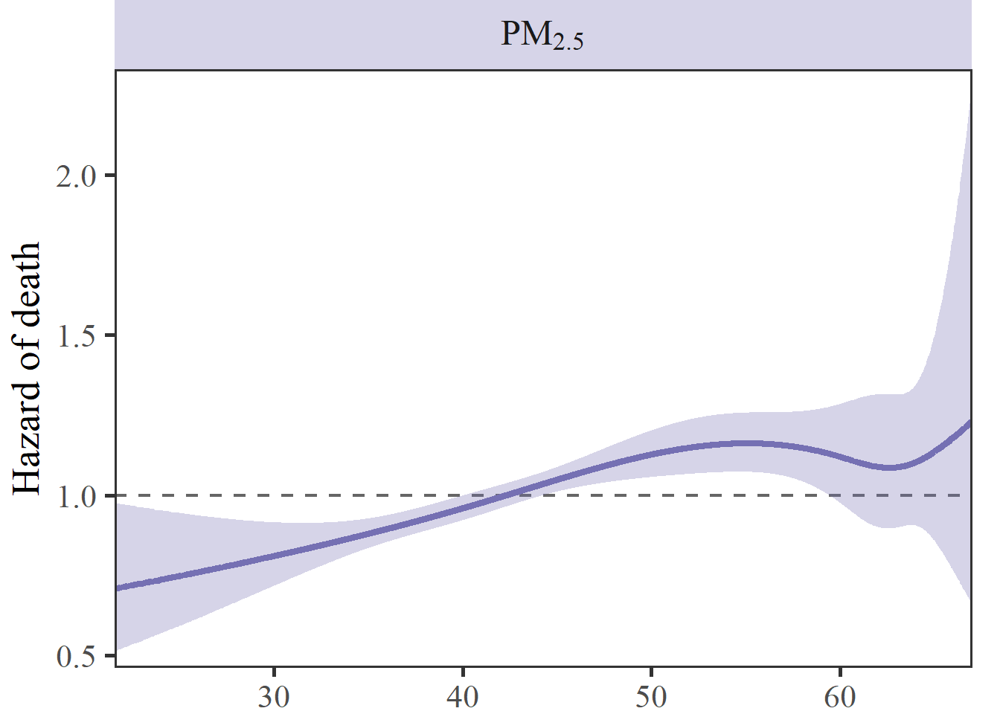
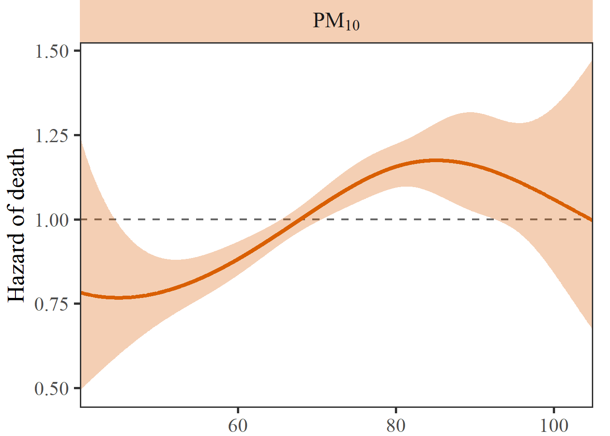

队列研究
文献实例
Di, Q., Wang, Y., Zanobetti, A., Wang, Y., Koutrakis, P., Choirat, C., … Schwartz, J. D. (2017). Air pollution and mortality in the Medicare population. New England Journal of Medicine (IF=176), 376(26), 2513-2522. PDF DOI: 10.1056/NEJMoa1702747
Yu, K., Qiu, G., Chan, K. H., Lam, K. B. H., Kurmi, O. P., Bennett, D. A., … Wu, T. (2018). Association of solid fuel use with risk of cardiovascular and all-cause mortality in rural China. JAMA (IF=157), 319(13), 1351-1361. PDF DOI: https://doi.org/10.1001/jama.2018.2151
Cai, M., Li, H., Wu, Y., Zhang. S., Wang. X., Zhang. Z., Lin. H. (2022) Ambient Air Pollution Associated with Body Fat Percentages at Different Body Compartments: A Cohort Study of UK Biobank Participants. Environmental Health Perspectives (IF=11.0). 130(6): 067702. PDF
Cai, M., Lin, X., Wang, X., Zhang, S., Qian, Z., McMillin, S.E., Aaron, H.E., Lin, H., Wei, J., Zhang, Z., Pan, J. (2022) Ambient particulate matter pollution of different sizes associated with recurrent stroke hospitalization in China: a cohort study of 1.07 million stroke patients. Science of the Total Environment (IF=10.8). 159104. PDF
R语言代码实战
Cox回归
读取数据
pacman::p_load(
arrow, dplyr, ggplot2, data.table, broom, survival, splines, survival, purrr, latex2exp, patchwork, rms)
cohort_cox = arrow::read_parquet(
'Data/cohort_Cox_synthetic.parquet')
glimpse(cohort_cox)Rows: 8,262
Columns: 12
$ rehosp_staus <dbl> 0, 0, 0, 1, 0, 0, 0, 0, 0, 0, 0, 1, 0, 1, 0, 0, 0, 0…
$ t2rehosp <int> 741, 1267, 510, 126, 1076, 402, 980, 589, 502, 524, …
$ age <dbl> 74, 79, 72, 79, 52, 75, 68, 62, 75, 73, 77, 70, 76, …
$ sex <fct> Female, Female, Female, Female, Female, Female, Fema…
$ ethnicity <fct> Han, Han, Han, Han, Han, Han, Han, Han, Han, Han, Ha…
$ marriage <fct> Married, Married, Married, Married, Married, Married…
$ occupation <fct> Farmer, Farmer, Other, Other, Other, Farmer, Other, …
$ PM1_MA_365 <dbl> 26.94837, 21.58845, 26.15891, 25.80991, 34.91308, 36…
$ PM2.5_MA_365 <dbl> 41.79592, 31.49986, 36.12802, 42.01941, 48.28277, 44…
$ PM10_MA_365 <dbl> 68.51770, 63.77828, 57.15183, 67.48609, 76.22407, 72…
$ Temperature_MA_07 <dbl> 5.847840, 24.166486, 26.243227, 9.688386, 6.529096, …
$ RH_MA_07 <dbl> 73.08185, 67.75124, 87.87124, 72.36949, 68.59028, 71…拟合模型
fit0 = coxph(
formula = Surv(t2rehosp, rehosp_staus) ~ PM1_MA_365 + age + ethnicity +
marriage + occupation + ns(Temperature_MA_07, df = 5) + ns(RH_MA_07, df = 5),
data = cohort_cox)
class(fit0)[1] "coxph"Call:
coxph(formula = Surv(t2rehosp, rehosp_staus) ~ PM1_MA_365 + age +
ethnicity + marriage + occupation + ns(Temperature_MA_07,
df = 5) + ns(RH_MA_07, df = 5), data = cohort_cox)
coef exp(coef) se(coef) z p
PM1_MA_365 0.011054 1.011115 0.003903 2.832 0.00462
age -0.001324 0.998677 0.002192 -0.604 0.54576
ethnicityNon-han -0.058235 0.943428 0.201408 -0.289 0.77247
marriageUnmarried 0.186563 1.205100 0.104045 1.793 0.07296
marriageWidowed 0.038527 1.039279 0.096506 0.399 0.68973
marriageDivorced 0.207441 1.230525 0.159879 1.297 0.19446
marriageOther -0.118606 0.888158 0.158128 -0.750 0.45322
occupationPrivate institution -0.134948 0.873761 0.151888 -0.888 0.37429
occupationFarmer -0.101090 0.903852 0.128781 -0.785 0.43247
occupationJobless -0.149602 0.861050 0.177534 -0.843 0.39942
occupationRetired -0.101371 0.903598 0.143299 -0.707 0.47931
occupationOther -0.241753 0.785250 0.131212 -1.842 0.06541
ns(Temperature_MA_07, df = 5)1 0.010090 1.010141 0.762198 0.013 0.98944
ns(Temperature_MA_07, df = 5)2 0.036154 1.036816 0.810714 0.045 0.96443
ns(Temperature_MA_07, df = 5)3 -0.044010 0.956944 0.474768 -0.093 0.92614
ns(Temperature_MA_07, df = 5)4 0.292356 1.339580 1.608833 0.182 0.85580
ns(Temperature_MA_07, df = 5)5 -0.025618 0.974708 0.371333 -0.069 0.94500
ns(RH_MA_07, df = 5)1 0.419264 1.520842 0.664890 0.631 0.52832
ns(RH_MA_07, df = 5)2 0.450642 1.569319 0.691113 0.652 0.51437
ns(RH_MA_07, df = 5)3 0.077616 1.080708 0.392458 0.198 0.84323
ns(RH_MA_07, df = 5)4 0.620296 1.859479 1.408819 0.440 0.65972
ns(RH_MA_07, df = 5)5 0.194996 1.215307 0.419406 0.465 0.64198
Likelihood ratio test=34.99 on 22 df, p=0.03881
n= 8262, number of events= 2474 # A tibble: 22 × 5
term estimate std.error statistic p.value
<chr> <dbl> <dbl> <dbl> <dbl>
1 PM1_MA_365 0.0111 0.00390 2.83 0.00462
2 age -0.00132 0.00219 -0.604 0.546
3 ethnicityNon-han -0.0582 0.201 -0.289 0.772
4 marriageUnmarried 0.187 0.104 1.79 0.0730
5 marriageWidowed 0.0385 0.0965 0.399 0.690
6 marriageDivorced 0.207 0.160 1.30 0.194
7 marriageOther -0.119 0.158 -0.750 0.453
8 occupationPrivate institution -0.135 0.152 -0.888 0.374
9 occupationFarmer -0.101 0.129 -0.785 0.432
10 occupationJobless -0.150 0.178 -0.843 0.399
# ℹ 12 more rows# A tibble: 22 × 5
term estimate std.error statistic p.value
<chr> <dbl> <dbl> <dbl> <dbl>
1 PM1_MA_365 1.01 0.00390 2.83 0.00462
2 age 0.999 0.00219 -0.604 0.546
3 ethnicityNon-han 0.943 0.201 -0.289 0.772
4 marriageUnmarried 1.21 0.104 1.79 0.0730
5 marriageWidowed 1.04 0.0965 0.399 0.690
6 marriageDivorced 1.23 0.160 1.30 0.194
7 marriageOther 0.888 0.158 -0.750 0.453
8 occupationPrivate institution 0.874 0.152 -0.888 0.374
9 occupationFarmer 0.904 0.129 -0.785 0.432
10 occupationJobless 0.861 0.178 -0.843 0.399
# ℹ 12 more rows# A tibble: 22 × 7
term estimate std.error statistic p.value conf.low conf.high
<chr> <dbl> <dbl> <dbl> <dbl> <dbl> <dbl>
1 PM1_MA_365 1.01 0.00390 2.83 0.00462 1.00 1.02
2 age 0.999 0.00219 -0.604 0.546 0.994 1.00
3 ethnicityNon-han 0.943 0.201 -0.289 0.772 0.636 1.40
4 marriageUnmarried 1.21 0.104 1.79 0.0730 0.983 1.48
5 marriageWidowed 1.04 0.0965 0.399 0.690 0.860 1.26
6 marriageDivorced 1.23 0.160 1.30 0.194 0.900 1.68
7 marriageOther 0.888 0.158 -0.750 0.453 0.651 1.21
8 occupationPrivate in… 0.874 0.152 -0.888 0.374 0.649 1.18
9 occupationFarmer 0.904 0.129 -0.785 0.432 0.702 1.16
10 occupationJobless 0.861 0.178 -0.843 0.399 0.608 1.22
# ℹ 12 more rowsfit_cox = function(x, dat = drehosp, scale_num = 10){
clean_fit = coxph(
formula = as.formula(paste0("Surv(t2rehosp, rehosp_staus) ~ ",
x,
' + age + ethnicity + marriage + occupation +
ns(Temperature_MA_07, df = 5) + ns(RH_MA_07, df = 5)')),
data = dat) %>%
tidy() %>%
filter(grepl('PM|O3|CO|NO2|SO2', term)) %>%
mutate(OR = exp(estimate*scale_num), 3,
OR_round = round(exp(estimate*scale_num), 3),
CI_low = exp(estimate*scale_num - 1.96*std.error*scale_num),
CI_high = exp(estimate*scale_num + 1.96*std.error*scale_num),
CI_low_round = round(exp(estimate*scale_num - 1.96*std.error*scale_num), 3),
CI_high_round = round(exp(estimate*scale_num + 1.96*std.error*scale_num), 3),
predictor = x) %>%
mutate(result = paste0(format(OR_round, nsmall = 3),
' (',
format(CI_low_round, nsmall = 3),
'-',
format(CI_high_round, nsmall = 3),
')')) %>%
select(predictor, term, result, OR, CI_low, CI_high, p.value)
print(x)
return(clean_fit)
}
estimate_cox = map_dfr(
c("PM1_MA_365", "PM2.5_MA_365", "PM10_MA_365"),
fit_cox,
dat = cohort_cox,
scale_num = 10)[1] "PM1_MA_365"
[1] "PM2.5_MA_365"
[1] "PM10_MA_365"# A tibble: 3 × 7
predictor term result OR CI_low CI_high p.value
<chr> <chr> <chr> <dbl> <dbl> <dbl> <dbl>
1 PM1_MA_365 PM1_MA_365 1.117 (1.035-1.206) 1.12 1.03 1.21 4.62e-3
2 PM2.5_MA_365 PM2.5_MA_365 1.112 (1.062-1.165) 1.11 1.06 1.17 7.28e-6
3 PM10_MA_365 PM10_MA_365 1.098 (1.061-1.136) 1.10 1.06 1.14 6.20e-8暴露反应关系
25% 50% 75%
38.12038 42.49512 48.53397 1% 99%
21.55512 67.39910 fit_cox_pm2.5 = coxph(
Surv(t2rehosp, rehosp_staus) ~ ns(PM2.5_MA_365, knots = c(40.48, 60, 63)) +
age + ethnicity + marriage + occupation + ns(Temperature_MA_07, df = 5) + ns(RH_MA_07, df = 5),
data = cohort_cox %>%
filter(PM2.5_MA_365 > 21.55 & PM2.5_MA_365 < 67))
sp_cox_pm2.5 = fit_cox_pm2.5 %>%
termplot(se = T, plot = F) %>%
.[['PM2.5_MA_365']] %>%
as.data.table() %>%
.[,`:=`(HR = exp(y),
HRmin = exp(y - 1.96*se),
HRmax = exp(y + 1.96*se))] %>%
.[, `:=`(pollutant = 'PM2.5')] %>%
.[]
sp_cox_pm2.5 x y se HR HRmin HRmax pollutant
1: 21.57385 -0.3434542 0.1633379 0.7093160 0.5149958 0.9769578 PM2.5
2: 21.57581 -0.3434234 0.1633122 0.7093378 0.5150376 0.9769386 PM2.5
3: 21.60621 -0.3429450 0.1629124 0.7096772 0.5156881 0.9766404 PM2.5
4: 21.73148 -0.3409740 0.1612655 0.7110774 0.5183760 0.9754136 PM2.5
5: 21.77162 -0.3403425 0.1607381 0.7115266 0.5192400 0.9750213 PM2.5
---
8048: 66.53952 0.1896596 0.2733318 1.2088381 0.7074625 2.0655364 PM2.5
8049: 66.64180 0.1940871 0.2833337 1.2142020 0.6968069 2.1157749 PM2.5
8050: 66.73012 0.1979229 0.2920360 1.2188684 0.6876552 2.1604434 PM2.5
8051: 66.93246 0.2067362 0.3121532 1.2296581 0.6669207 2.2672248 PM2.5
8052: 66.95539 0.2077358 0.3144453 1.2308879 0.6645953 2.2797108 PM2.5arr = list('PM1' = TeX("PM$_{1}$"),
"PM2.5" = TeX("PM$_{2.5}$"),
"PM10" = TeX("PM$_{10}$"))
mylabel = function(val) { return(lapply(val, function(x) arr[x])) }
color7 = c('#7570b3', '#d95f02', '#1b9e77')
p_cox_pm2.5 = sp_cox_pm2.5 %>%
ggplot(aes(x = x, y = HR)) +
geom_hline(yintercept = 1, linewidth = 0.8, alpha = 0.6, linetype = 'dashed') +
geom_ribbon(aes(ymin = HRmin, ymax = HRmax), alpha = 0.3, color = NA, fill = color7[1]) +
geom_line(linewidth = 1.5, color = color7[1]) +
facet_wrap(~ pollutant, scales = 'free', labeller = mylabel) +
scale_x_continuous(expand = c(0, 0)) +
scale_y_continuous(expand = c(0, 0.05)) +
labs(x = NULL, y = 'Hazard of death') +
theme_test(base_size = 20, base_family = 'serif') + # , base_family = 'serif'
theme(plot.margin = unit(c(0, 0.5, 0, 0.2), 'cm'),
plot.title = element_text(size = 20, face = 'bold'),
strip.background = element_rect(fill = ggplot2::alpha(color7[1], 0.3), color = NA),
strip.text = element_text(size = 18, face = 'bold'))
p_cox_pm2.5
可以尝试调节不同节点和不同df对曲线的影响。
多个图形进行拼图
先拟合一个PM\(_1\)的图形：
25% 50% 75%
61.18076 69.45975 77.40257 1% 99%
39.12063 105.25648 fit_cox_pm10 = coxph(
Surv(t2rehosp, rehosp_staus) ~ ns(PM10_MA_365, knots = c(40.48, 80, 90)) +
age + ethnicity + marriage + occupation + ns(Temperature_MA_07, df = 5) + ns(RH_MA_07, df = 5),
data = cohort_cox %>%
filter(PM10_MA_365 > 40 & PM10_MA_365 < 105))
sp_cox_pm10 = fit_cox_pm10 %>%
termplot(se = T, plot = F) %>%
.[['PM10_MA_365']] %>%
as.data.table() %>%
.[,`:=`(HR = exp(y),
HRmin = exp(y - 1.96*se),
HRmax = exp(y + 1.96*se))] %>%
.[, `:=`(pollutant = 'PM10')] %>%
.[]
p_cox_pm10 = sp_cox_pm10 %>%
ggplot(aes(x = x, y = HR)) +
geom_hline(yintercept = 1, linewidth = 0.8, alpha = 0.6, linetype = 'dashed') +
geom_ribbon(aes(ymin = HRmin, ymax = HRmax), alpha = 0.3, color = NA, fill = color7[2]) +
geom_line(linewidth = 1.5, color = color7[2]) +
facet_wrap(~ pollutant, scales = 'free', labeller = mylabel) +
scale_x_continuous(expand = c(0, 0)) +
scale_y_continuous(expand = c(0, 0.05)) +
labs(x = NULL, y = 'Hazard of death') +
theme_test(base_size = 20, base_family = 'serif') + # , base_family = 'serif'
theme(plot.margin = unit(c(0, 0.5, 0, 0.2), 'cm'),
plot.title = element_text(size = 20, face = 'bold'),
strip.background = element_rect(fill = ggplot2::alpha(color7[2], 0.3), color = NA),
strip.text = element_text(size = 18, face = 'bold'))
p_cox_pm10
使用patchwork包进行拼图
限制性立方样条
rcs_cox_pm2.5 <- cph(Surv(t2rehosp, rehosp_staus) ~ rcs(PM2.5_MA_365, c(40.48, 60, 63)) + age + ethnicity + marriage + occupation + rcs(Temperature_MA_07, df = 5),
data = cohort_cox %>%
filter(PM2.5_MA_365 > 21.55 & PM2.5_MA_365 < 67))
anova(rcs_cox_pm2.5) Wald Statistics Response: Surv(t2rehosp, rehosp_staus)
Factor Chi-Square d.f. P
PM2.5_MA_365 26.36 2 <.0001
Nonlinear 3.44 1 0.0637
age 0.62 1 0.4327
ethnicity 0.00 1 0.9448
marriage 5.03 4 0.2839
occupation 12.64 5 0.0270
Temperature_MA_07 4.29 4 0.3682
Nonlinear 1.92 3 0.5894
TOTAL NONLINEAR 5.21 4 0.2661
TOTAL 44.41 17 0.0003dd <- datadist(cohort_cox %>%
filter(PM2.5_MA_365 > 21.55 & PM2.5_MA_365 < 67))
options(datadist = 'dd')
HR <- Predict(rcs_cox_pm2.5, PM2.5_MA_365, fun = exp, ref.zero = TRUE) %>%
setDT()
p2 <- HR %>%
ggplot(aes(x = PM2.5_MA_365, y = yhat)) +
geom_ribbon(aes(ymin = lower, ymax = upper), alpha = 0.3) +
geom_line(linewidth = 1) +
theme_classic()
p2
混合线性模型
读取数据
pacman::p_load(
arrow, dplyr, ggplot2, data.table, broom.mixed, lme4, purrr, glue, stringr)
cohort_lme = arrow::read_parquet(
'Data/cohort_lmer_synthetic.parquet')
glimpse(cohort_lme)Rows: 22,138
Columns: 13
$ id <int> 1, 1, 2, 2, 3, 3, 3, 4, 4, 5, 5, 6, 6, 7, 7, 8, 8, 9, …
$ delta_t <dbl> 0.00, 10.54, 0.00, 9.20, 0.00, 4.71, 9.06, 0.00, 7.54,…
$ PM2.5 <dbl> 10.4, 10.4, 10.4, 10.4, 10.9, 10.9, 10.9, 9.7, 9.7, 11…
$ body_fat_p <dbl> 1.94000, 25.15878, 2.30000, 27.85871, 2.23000, 14.0947…
$ arm_left_fat_p <dbl> 0.17300, 20.53660, 0.22500, 24.00601, 0.21500, 10.7182…
$ arm_right_fat_p <dbl> 1.70000, 21.46575, 1.99000, 24.08298, 1.97000, 11.3556…
$ leg_left_fat_p <dbl> 17.3, 18.7, 17.1, 21.8, 17.5, 19.6, 22.4, 37.2, 40.6, …
$ leg_right_fat_p <dbl> 17.7, 20.3, 14.3, 20.8, 17.2, 20.7, 22.5, 37.4, 41.1, …
$ trunk_fat_p <dbl> 20.8, 23.5, 27.5, 31.2, 25.4, 27.8, 28.8, 32.6, 37.2, …
$ age <dbl> 59, 59, 44, 44, 49, 49, 49, 45, 45, 50, 50, 50, 50, 60…
$ sex <chr> "Male", "Male", "Male", "Male", "Male", "Male", "Male"…
$ ethnicity <chr> "White", "White", "White", "White", "White", "White", …
$ smoking_status <fct> 0. Never, 0. Never, 0. Never, 0. Never, 1. Previous, 1…混合效应模型
\[y_{ij} = \beta_0 + \beta_{1}\text{PM}_{i}\times\text{year}_{ij} + \beta_{2}\text{year}_{ij} + \beta_3\text{age}_i + \beta_4\text{sex}_i + \beta_5\text{smoking}_i + \epsilon_{ij}\]
fit_lme = function(y){
f0 = lmer(as.formula(glue('{y} ~ PM2.5:delta_t + delta_t + age + sex + smoking_status +
(1|id)')), data = cohort_lme)
f0 %>%
tidy(conf.int = TRUE) %>%
filter(grepl('PM2.5', term)) %>%
mutate(estimate = estimate,
conf.low = conf.low,
conf.high = conf.high) %>%
mutate(CI = paste0(str_pad(round(estimate, 3), width = 5, side = 'right', pad = '0'),
' (',
str_pad(round(conf.low, 3), width = 5, side = 'right', pad = '0'),
', ',
str_pad(round(conf.high, 3), width = 5, side = 'right', pad = '0'),
')')) %>%
mutate(y = y,
N = nobs(f0)) %>%
dplyr::select(y, term, estimate, conf.low, conf.high, CI, std.error)
}
res = map_dfr(
c("body_fat_p", "arm_left_fat_p", "arm_right_fat_p",
"leg_left_fat_p", "leg_right_fat_p", "trunk_fat_p"),
fit_lme)
res# A tibble: 6 × 7
y term estimate conf.low conf.high CI std.error
<chr> <chr> <dbl> <dbl> <dbl> <chr> <dbl>
1 body_fat_p PM2.5:delta_t 0.0283 0.0186 0.0381 0.028 (0.… 0.00498
2 arm_left_fat_p PM2.5:delta_t 0.0577 0.0437 0.0717 0.058 (0.… 0.00713
3 arm_right_fat_p PM2.5:delta_t 0.0770 0.0633 0.0907 0.077 (0.… 0.00699
4 leg_left_fat_p PM2.5:delta_t 0.00748 0.00134 0.0136 0.007 (0.… 0.00313
5 leg_right_fat_p PM2.5:delta_t 0.00783 0.00129 0.0144 0.008 (0.… 0.00333
6 trunk_fat_p PM2.5:delta_t 0.00659 -0.00237 0.0155 0.007 (-0… 0.00457